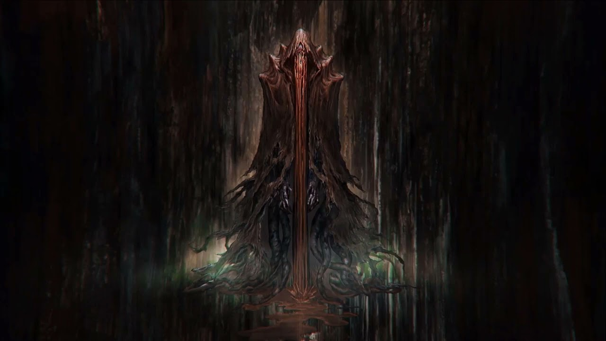
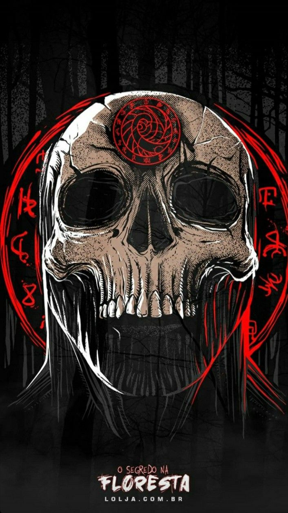

"boas vindas a ORDEM PARANORMAL RPG, um jogo de investigação No universo criado por Rafael
Lange, o
Cellbit. Neste jogo, você e seus amigos serão agentes da Ordem da Realidade com o dever de
proteger O nosso mundo das forças do outro Lado.
Talvez voce já assistiu as lives de RPG do Cellbit, como O Segredo na Floresta e
Calamidade.
Nesse caso, sabe que ocultistas buscam enfraquecer à Membrana que protege à Realidade, e que
à Ordo Realitas é a nossa única defesa contra eles.
Mas se voce ainda conhece O universo de ORDEM PARANORMAL, está prestes à entrar em um mundo de mistérios,
insanidade e medo. Mas também um mundo de investigadores corajosos;
membros de uma organização criada para proteger o mundo de
monstros paranormais ۰"
-introdução do livro de regras

Criado por Rafael Lange (Cellbit), Felipe Della Corte, Pedro Coimbra (PedroK), Silvia Sala,
Dan Ramos, Guilherme Dei Svaldi e Rafael Dei Svaldi, o RPG de Mesa baseado na série de lives
Ordem Paranormal foi desenvolvido e publicado pela Jambô Editora.
Após o artigo apresentando a resenha de Ordem Paranormal RPG (onde explico como o sistema do
jogo funciona), está na hora de nos debruçarmos sobre a criação de personagens deste livro
inacreditavelmente lindo.
Em Ordem Paranormal RPG, os personagens dos jogadores são denominados Agentes. Esses
agentes, membros da Ordo Realitas (ou de outra organização que você queira criar), serão
responsáveis por proteger o mundo da devastação trazida pelas ameaças do Outro Lado, assim
como seus adoradores cultistas.
